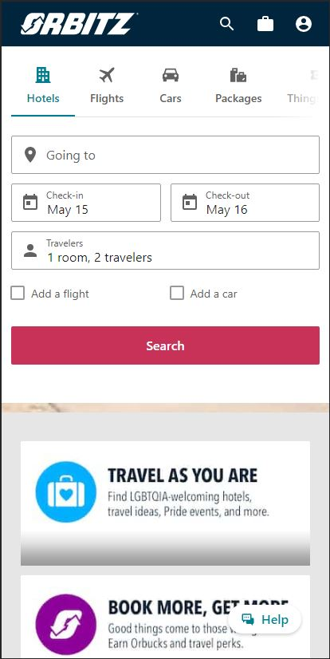
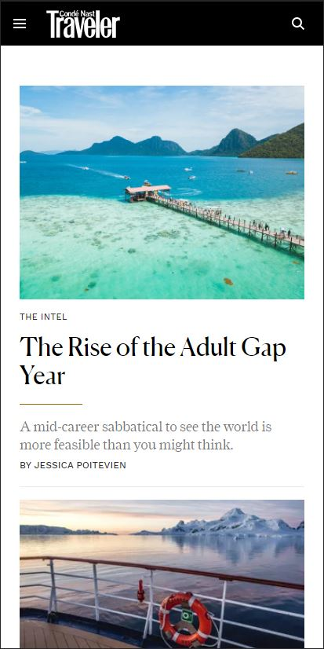
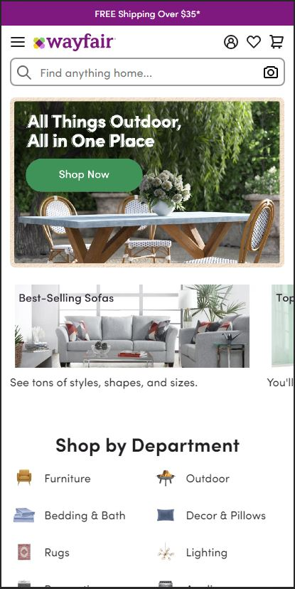

Hick's Law
By the nature of the site, Orbitz website can get overwhelming with the amount of information that you can end up wading through. Whether it be a hotel, a rental car, or airline. Hick's Law lets use know that the more choices you have the longer it takes to make a decision. Orbitz helps avoid this by making the search filter the top of the website.This design priciple helps people from getting overwhelmed and possible using another site for their travel plans.
www.orbitz.comRule of Thirds
Conde Nast does a great job of drawing the eyes of site vistors using the Rule of Thirds on the pictures featured on the site. The Rule of Thirds is when an image is divided into nine equal parts by placing two equally spaced horizontal lines and two equally spaced vertical lines. The focal point should be placed along these lines or at their intersections. The goal of this site is to get interest in different places to go, and a well thought out picture helps drive the interest in reading the articles.
www.cntraveler.comWhite Space
Wayfair does a nice job of keeping the site organized and inviting by the use of white space. The proper use of white space allows this site to be more readable, gives it a clean organized look, and simple to navigate. These are all things that enhance the site users experience, and draws them back to the page.
www.wayfair.com